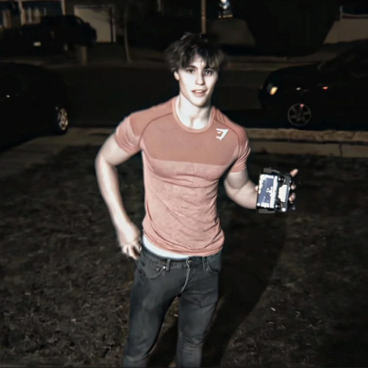

Puedes seguirnos para estar al tanto de nuestra evolución constante y determinada
Como decía anteriormente este proyecto no acaba al cumplir con la misión de publicar el producto final, porque hay más, más proyectos, más ideas, más historia. Lo bueno de todo es que considero crear webs para hacer públicas esas ideas y proyectos futuros para así motivar a otros jóvenes con las mismas expectativas a mejorar por su cuenta y sacar a la luz sus propias ideas y proyectos. En fin, mi nombre es Joshua Castillo, estoy aprendiendo programación y desarrollo web y me gustaría ayudarte en tu desarrollo personal, físico y profesional para poder crecer con esfuerzo y disciplina constantemente.